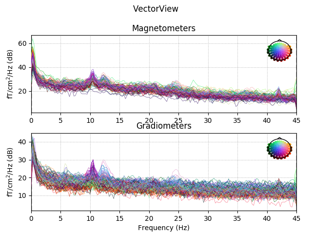
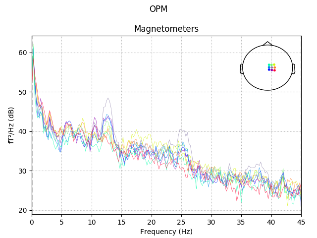
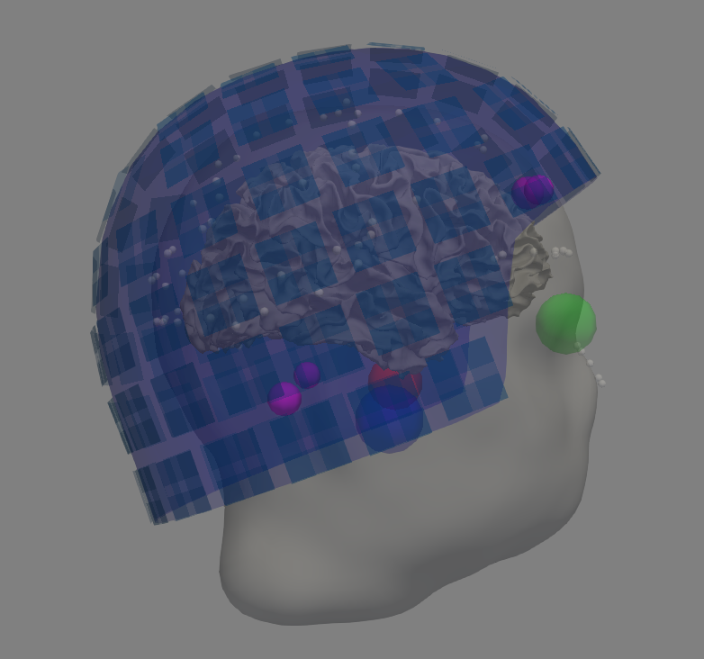
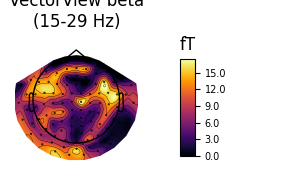
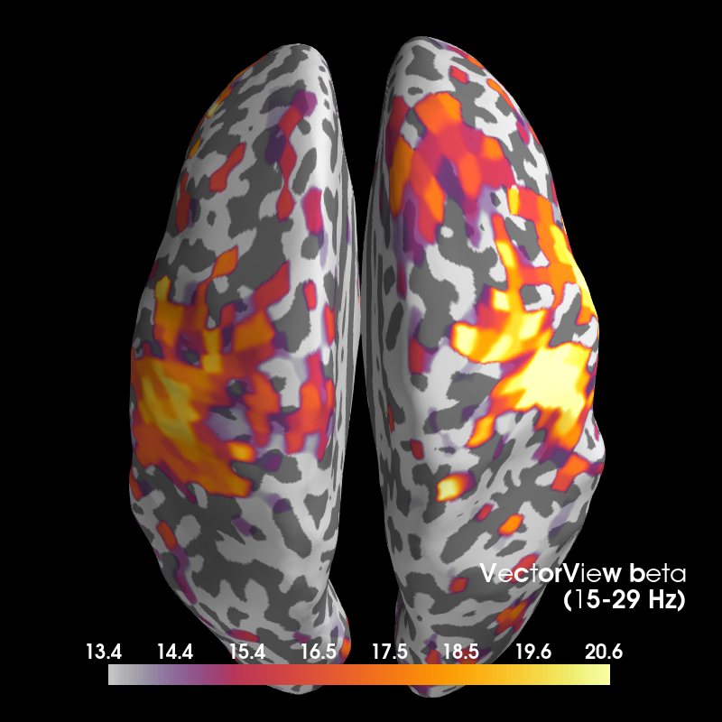
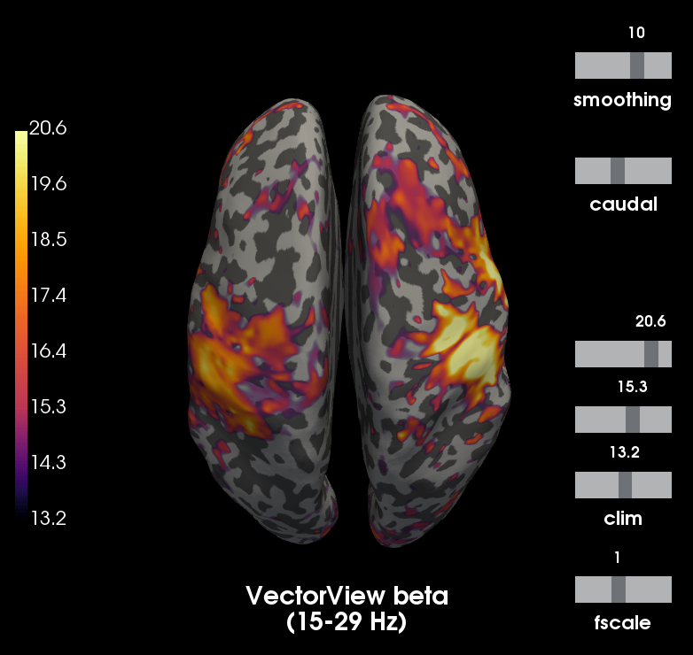
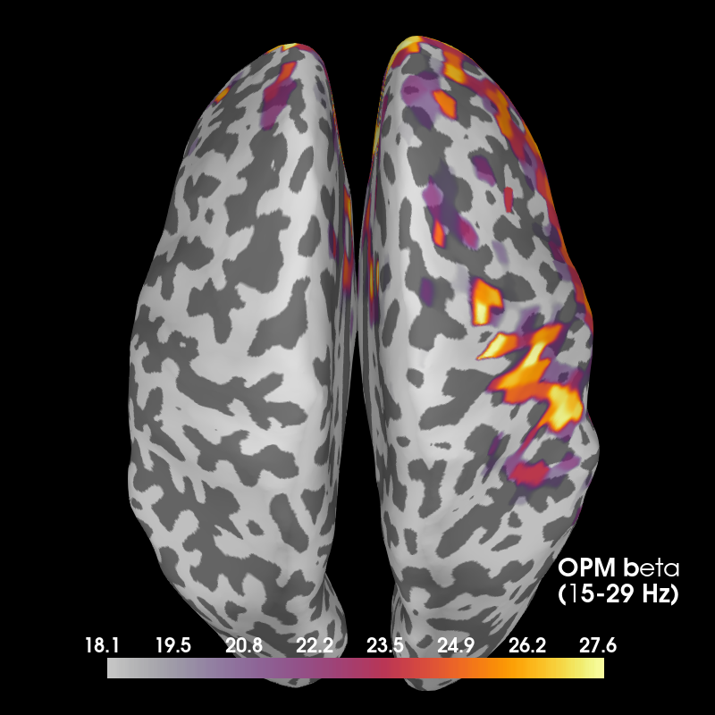

Note
Click here to download the full example code
Compute source power spectral density (PSD) of VectorView and OPM data¶
Here we compute the resting state from raw for data recorded using a Neuromag VectorView system and a custom OPM system. The pipeline is meant to mostly follow the Brainstorm 1 OMEGA resting tutorial pipeline. The steps we use are:
Filtering: downsample heavily.
Artifact detection: use SSP for EOG and ECG.
Source localization: dSPM, depth weighting, cortically constrained.
Frequency: power spectral density (Welch), 4 sec window, 50% overlap.
Standardize: normalize by relative power for each source.
Preprocessing¶
# Authors: Denis Engemann <denis.engemann@gmail.com>
# Luke Bloy <luke.bloy@gmail.com>
# Eric Larson <larson.eric.d@gmail.com>
#
# License: BSD (3-clause)
import os.path as op
from mne.filter import next_fast_len
import mne
print(__doc__)
data_path = mne.datasets.opm.data_path()
subject = 'OPM_sample'
subjects_dir = op.join(data_path, 'subjects')
bem_dir = op.join(subjects_dir, subject, 'bem')
bem_fname = op.join(subjects_dir, subject, 'bem',
subject + '-5120-5120-5120-bem-sol.fif')
src_fname = op.join(bem_dir, '%s-oct6-src.fif' % subject)
vv_fname = data_path + '/MEG/SQUID/SQUID_resting_state.fif'
vv_erm_fname = data_path + '/MEG/SQUID/SQUID_empty_room.fif'
vv_trans_fname = data_path + '/MEG/SQUID/SQUID-trans.fif'
opm_fname = data_path + '/MEG/OPM/OPM_resting_state_raw.fif'
opm_erm_fname = data_path + '/MEG/OPM/OPM_empty_room_raw.fif'
opm_trans_fname = None
opm_coil_def_fname = op.join(data_path, 'MEG', 'OPM', 'coil_def.dat')
Load data, resample. We will store the raw objects in dicts with entries “vv” and “opm” to simplify housekeeping and simplify looping later.
raws = dict()
raw_erms = dict()
new_sfreq = 90. # Nyquist frequency (45 Hz) < line noise freq (50 Hz)
raws['vv'] = mne.io.read_raw_fif(vv_fname, verbose='error') # ignore naming
raws['vv'].load_data().resample(new_sfreq)
raws['vv'].info['bads'] = ['MEG2233', 'MEG1842']
raw_erms['vv'] = mne.io.read_raw_fif(vv_erm_fname, verbose='error')
raw_erms['vv'].load_data().resample(new_sfreq)
raw_erms['vv'].info['bads'] = ['MEG2233', 'MEG1842']
raws['opm'] = mne.io.read_raw_fif(opm_fname)
raws['opm'].load_data().resample(new_sfreq)
raw_erms['opm'] = mne.io.read_raw_fif(opm_erm_fname)
raw_erms['opm'].load_data().resample(new_sfreq)
# Make sure our assumptions later hold
assert raws['opm'].info['sfreq'] == raws['vv'].info['sfreq']
Out:
Opening raw data file /home/circleci/mne_data/MNE-OPM-data/MEG/OPM/OPM_resting_state_raw.fif...
Isotrak not found
Range : 0 ... 61999 = 0.000 ... 61.999 secs
Ready.
Current compensation grade : 0
Reading 0 ... 61999 = 0.000 ... 61.999 secs...
Trigger channel has a non-zero initial value of 256 (consider using initial_event=True to detect this event)
Trigger channel has a non-zero initial value of 256 (consider using initial_event=True to detect this event)
Opening raw data file /home/circleci/mne_data/MNE-OPM-data/MEG/OPM/OPM_empty_room_raw.fif...
Isotrak not found
Range : 0 ... 61999 = 0.000 ... 61.999 secs
Ready.
Current compensation grade : 0
Reading 0 ... 61999 = 0.000 ... 61.999 secs...
Trigger channel has a non-zero initial value of 256 (consider using initial_event=True to detect this event)
Trigger channel has a non-zero initial value of 256 (consider using initial_event=True to detect this event)
Do some minimal artifact rejection just for VectorView data
titles = dict(vv='VectorView', opm='OPM')
ssp_ecg, _ = mne.preprocessing.compute_proj_ecg(
raws['vv'], tmin=-0.1, tmax=0.1, n_grad=1, n_mag=1)
raws['vv'].add_proj(ssp_ecg, remove_existing=True)
# due to how compute_proj_eog works, it keeps the old projectors, so
# the output contains both projector types (and also the original empty-room
# projectors)
ssp_ecg_eog, _ = mne.preprocessing.compute_proj_eog(
raws['vv'], n_grad=1, n_mag=1, ch_name='MEG0112')
raws['vv'].add_proj(ssp_ecg_eog, remove_existing=True)
raw_erms['vv'].add_proj(ssp_ecg_eog)
fig = mne.viz.plot_projs_topomap(raws['vv'].info['projs'][-4:],
info=raws['vv'].info)
fig.suptitle(titles['vv'])
fig.subplots_adjust(0.05, 0.05, 0.95, 0.85)
Out:
Including 13 SSP projectors from raw file
Running ECG SSP computation
Reconstructing ECG signal from Magnetometers
Setting up band-pass filter from 5 - 35 Hz
FIR filter parameters
---------------------
Designing a two-pass forward and reverse, zero-phase, non-causal bandpass filter:
- Windowed frequency-domain design (firwin2) method
- Hann window
- Lower passband edge: 5.00
- Lower transition bandwidth: 0.50 Hz (-12 dB cutoff frequency: 4.75 Hz)
- Upper passband edge: 35.00 Hz
- Upper transition bandwidth: 0.50 Hz (-12 dB cutoff frequency: 35.25 Hz)
- Filter length: 1024 samples (11.378 sec)
Number of ECG events detected : 47 (average pulse 45 / min.)
Computing projector
47 matching events found
No baseline correction applied
Not setting metadata
Created an SSP operator (subspace dimension = 13)
13 projection items activated
Loading data for 47 events and 19 original time points ...
Rejecting epoch based on MAG : ['MEG0111']
1 bad epochs dropped
No EEG channels found. Forcing n_eeg to 0
Adding projection: planar--0.100-0.100-PCA-01
Adding projection: axial--0.100-0.100-PCA-01
Done.
Including 15 SSP projectors from raw file
Running EOG SSP computation
Using channel MEG0112 as EOG channel
EOG channel index for this subject is: [1]
Filtering the data to remove DC offset to help distinguish blinks from saccades
Setting up band-pass filter from 1 - 10 Hz
FIR filter parameters
---------------------
Designing a two-pass forward and reverse, zero-phase, non-causal bandpass filter:
- Windowed frequency-domain design (firwin2) method
- Hann window
- Lower passband edge: 1.00
- Lower transition bandwidth: 0.50 Hz (-12 dB cutoff frequency: 0.75 Hz)
- Upper passband edge: 10.00 Hz
- Upper transition bandwidth: 0.50 Hz (-12 dB cutoff frequency: 10.25 Hz)
- Filter length: 1024 samples (11.378 sec)
Now detecting blinks and generating corresponding events
Number of EOG events detected : 40
Computing projector
40 matching events found
No baseline correction applied
Not setting metadata
Created an SSP operator (subspace dimension = 15)
15 projection items activated
Loading data for 40 events and 37 original time points ...
Rejecting epoch based on MAG : ['MEG0111']
1 bad epochs dropped
No EEG channels found. Forcing n_eeg to 0
Adding projection: planar--0.200-0.200-PCA-01
Adding projection: axial--0.200-0.200-PCA-01
Done.
Explore data
- 
- 
Out:
Using n_fft=360 (4.0 sec)
No projector specified for this dataset. Please consider the method self.add_proj.
Effective window size : 4.000 (s)
Alignment and forward¶
src = mne.read_source_spaces(src_fname)
# This line removes source-to-source distances that we will not need.
# We only do it here to save a bit of memory, in general this is not required.
del src[0]['dist'], src[1]['dist']
bem = mne.read_bem_solution(bem_fname)
fwd = dict()
trans = dict(vv=vv_trans_fname, opm=opm_trans_fname)
# check alignment and generate forward
with mne.use_coil_def(opm_coil_def_fname):
for kind in kinds:
dig = True if kind == 'vv' else False
fig = mne.viz.plot_alignment(
raws[kind].info, trans=trans[kind], subject=subject,
subjects_dir=subjects_dir, dig=dig, coord_frame='mri',
surfaces=('head', 'white'))
mne.viz.set_3d_view(figure=fig, azimuth=0, elevation=90,
distance=0.6, focalpoint=(0., 0., 0.))
fwd[kind] = mne.make_forward_solution(
raws[kind].info, trans[kind], src, bem, eeg=False, verbose=True)
del trans, src, bem
- 

Out:
Reading a source space...
Computing patch statistics...
Patch information added...
Distance information added...
[done]
Reading a source space...
Computing patch statistics...
Patch information added...
Distance information added...
[done]
2 source spaces read
Loading surfaces...
Three-layer model surfaces loaded.
Loading the solution matrix...
Loaded linear_collocation BEM solution from /home/circleci/mne_data/MNE-OPM-data/subjects/OPM_sample/bem/OPM_sample-5120-5120-5120-bem-sol.fif
Using outer_skin.surf for head surface.
Getting helmet for system 306m
Source space : <SourceSpaces: [<surface (lh), n_vertices=169022, n_used=4098, coordinate_frame=MRI (surface RAS)>, <surface (rh), n_vertices=169992, n_used=4098, coordinate_frame=MRI (surface RAS)>]>
MRI -> head transform : /home/circleci/mne_data/MNE-OPM-data/MEG/SQUID/SQUID-trans.fif
Measurement data : instance of Info
Conductor model : instance of ConductorModel
Accurate field computations
Do computations in head coordinates
Free source orientations
Read 2 source spaces a total of 8196 active source locations
Coordinate transformation: MRI (surface RAS) -> head
0.995623 -0.029776 -0.088592 1.15 mm
0.062622 0.916188 0.395825 5.31 mm
0.069381 -0.399641 0.914042 25.88 mm
0.000000 0.000000 0.000000 1.00
Read 306 MEG channels from info
2 coil definitions read
86 coil definitions read
Coordinate transformation: MEG device -> head
0.993107 -0.074371 -0.090590 0.76 mm
0.079171 0.995577 0.050589 -13.97 mm
0.086427 -0.057412 0.994603 60.91 mm
0.000000 0.000000 0.000000 1.00
MEG coil definitions created in head coordinates.
Source spaces are now in head coordinates.
Employing the head->MRI coordinate transform with the BEM model.
BEM model instance of ConductorModel is now set up
Source spaces are in head coordinates.
Checking that the sources are inside the surface (will take a few...)
Skipping interior check for 1335 sources that fit inside a sphere of radius 51.5 mm
Skipping solid angle check for 0 points using Qhull
Skipping interior check for 1352 sources that fit inside a sphere of radius 51.5 mm
Skipping solid angle check for 0 points using Qhull
Setting up compensation data...
No compensation set. Nothing more to do.
Composing the field computation matrix...
Computing MEG at 8196 source locations (free orientations)...
Finished.
Using outer_skin.surf for head surface.
Getting helmet for system unknown (derived from 9 MEG channel locations)
Source space : <SourceSpaces: [<surface (lh), n_vertices=169022, n_used=4098, coordinate_frame=MRI (surface RAS)>, <surface (rh), n_vertices=169992, n_used=4098, coordinate_frame=MRI (surface RAS)>]>
MRI -> head transform : identity
Measurement data : instance of Info
Conductor model : instance of ConductorModel
Accurate field computations
Do computations in head coordinates
Free source orientations
Read 2 source spaces a total of 8196 active source locations
Coordinate transformation: MRI (surface RAS) -> head
1.000000 0.000000 0.000000 0.00 mm
0.000000 1.000000 0.000000 0.00 mm
0.000000 0.000000 1.000000 0.00 mm
0.000000 0.000000 0.000000 1.00
Read 9 MEG channels from info
2 coil definitions read
86 coil definitions read
Coordinate transformation: MEG device -> head
0.999800 0.015800 -0.009200 0.10 mm
-0.018100 0.930500 -0.365900 16.60 mm
0.002800 0.366000 0.930600 -14.40 mm
0.000000 0.000000 0.000000 1.00
MEG coil definitions created in head coordinates.
Source spaces are now in head coordinates.
Employing the head->MRI coordinate transform with the BEM model.
BEM model instance of ConductorModel is now set up
Source spaces are in head coordinates.
Checking that the sources are inside the surface (will take a few...)
Skipping interior check for 1335 sources that fit inside a sphere of radius 51.5 mm
Skipping solid angle check for 0 points using Qhull
Skipping interior check for 1352 sources that fit inside a sphere of radius 51.5 mm
Skipping solid angle check for 0 points using Qhull
Setting up compensation data...
No compensation set. Nothing more to do.
Composing the field computation matrix...
Computing MEG at 8196 source locations (free orientations)...
Finished.
Compute and apply inverse to PSD estimated using multitaper + Welch. Group into frequency bands, then normalize each source point and sensor independently. This makes the value of each sensor point and source location in each frequency band the percentage of the PSD accounted for by that band.
freq_bands = dict(
delta=(2, 4), theta=(5, 7), alpha=(8, 12), beta=(15, 29), gamma=(30, 45))
topos = dict(vv=dict(), opm=dict())
stcs = dict(vv=dict(), opm=dict())
snr = 3.
lambda2 = 1. / snr ** 2
for kind in kinds:
noise_cov = mne.compute_raw_covariance(raw_erms[kind])
inverse_operator = mne.minimum_norm.make_inverse_operator(
raws[kind].info, forward=fwd[kind], noise_cov=noise_cov, verbose=True)
stc_psd, sensor_psd = mne.minimum_norm.compute_source_psd(
raws[kind], inverse_operator, lambda2=lambda2,
n_fft=n_fft, dB=False, return_sensor=True, verbose=True)
topo_norm = sensor_psd.data.sum(axis=1, keepdims=True)
stc_norm = stc_psd.sum() # same operation on MNE object, sum across freqs
# Normalize each source point by the total power across freqs
for band, limits in freq_bands.items():
data = sensor_psd.copy().crop(*limits).data.sum(axis=1, keepdims=True)
topos[kind][band] = mne.EvokedArray(
100 * data / topo_norm, sensor_psd.info)
stcs[kind][band] = \
100 * stc_psd.copy().crop(*limits).sum() / stc_norm.data
del inverse_operator
del fwd, raws, raw_erms
Out:
Using up to 304 segments
Number of samples used : 5472
[done]
Converting forward solution to surface orientation
Average patch normals will be employed in the rotation to the local surface coordinates....
Converting to surface-based source orientations...
[done]
info["bads"] and noise_cov["bads"] do not match, excluding bad channels from both
Computing inverse operator with 304 channels.
304 out of 306 channels remain after picking
Selected 304 channels
Creating the depth weighting matrix...
202 planar channels
limit = 7839/8196 = 10.032537
scale = 3.34919e-08 exp = 0.8
Applying loose dipole orientations. Loose value of 0.2.
Whitening the forward solution.
Created an SSP operator (subspace dimension = 17)
Computing data rank from covariance with rank=None
Using tolerance 7.1e-13 (2.2e-16 eps * 304 dim * 10 max singular value)
Estimated rank (mag + grad): 287
MEG: rank 287 computed from 304 data channels with 17 projectors
Setting small MEG eigenvalues to zero (without PCA)
Creating the source covariance matrix
Adjusting source covariance matrix.
Computing SVD of whitened and weighted lead field matrix.
largest singular value = 6.41431
scaling factor to adjust the trace = 1.3512e+20
31 matching events found
No baseline correction applied
Not setting metadata
Created an SSP operator (subspace dimension = 17)
17 projection items activated
Considering frequencies 0 ... 200 Hz
Preparing the inverse operator for use...
Scaled noise and source covariance from nave = 1 to nave = 1
Created the regularized inverter
Created an SSP operator (subspace dimension = 17)
Created the whitener using a noise covariance matrix with rank 287 (17 small eigenvalues omitted)
Computing noise-normalization factors (dSPM)...
[done]
Picked 304 channels from the data
Computing inverse...
Eigenleads need to be weighted ...
Reducing data rank 304 -> 287
Using hann windowing on at most 31 epochs
Using up to 309 segments
Number of samples used : 5562
[done]
Converting forward solution to surface orientation
Average patch normals will be employed in the rotation to the local surface coordinates....
Converting to surface-based source orientations...
[done]
Computing inverse operator with 9 channels.
9 out of 9 channels remain after picking
Selected 9 channels
Creating the depth weighting matrix...
9 magnetometer or axial gradiometer channels
limit = 6597/8196 = 10.009503
scale = 5.90306e-11 exp = 0.8
Applying loose dipole orientations. Loose value of 0.2.
Whitening the forward solution.
Computing data rank from covariance with rank=None
Using tolerance 3e-13 (2.2e-16 eps * 9 dim * 1.5e+02 max singular value)
Estimated rank (mag): 9
MAG: rank 9 computed from 9 data channels with 0 projectors
Setting small MAG eigenvalues to zero (without PCA)
Creating the source covariance matrix
Adjusting source covariance matrix.
Computing SVD of whitened and weighted lead field matrix.
largest singular value = 2.45198
scaling factor to adjust the trace = 2.14281e+18
31 matching events found
No baseline correction applied
Not setting metadata
0 projection items activated
Considering frequencies 0 ... 200 Hz
Preparing the inverse operator for use...
Scaled noise and source covariance from nave = 1 to nave = 1
Created the regularized inverter
The projection vectors do not apply to these channels.
Created the whitener using a noise covariance matrix with rank 9 (0 small eigenvalues omitted)
Computing noise-normalization factors (dSPM)...
[done]
Picked 9 channels from the data
Computing inverse...
Eigenleads need to be weighted ...
Reducing data rank 9 -> 9
Using hann windowing on at most 31 epochs
Now we can make some plots of each frequency band. Note that the OPM head coverage is only over right motor cortex, so only localization of beta is likely to be worthwhile.
Theta¶
def plot_band(kind, band):
"""Plot activity within a frequency band on the subject's brain."""
title = "%s %s\n(%d-%d Hz)" % ((titles[kind], band,) + freq_bands[band])
topos[kind][band].plot_topomap(
times=0., scalings=1., cbar_fmt='%0.1f', vmin=0, cmap='inferno',
time_format=title)
brain = stcs[kind][band].plot(
subject=subject, subjects_dir=subjects_dir, views='cau', hemi='both',
time_label=title, title=title, colormap='inferno',
clim=dict(kind='percent', lims=(70, 85, 99)))
brain.show_view(dict(azimuth=0, elevation=0), roll=0)
return fig, brain
fig_theta, brain_theta = plot_band('vv', 'theta')
Out:
Using control points [5.23719206 6.09001186 8.29544655]
Alpha¶
fig_alpha, brain_alpha = plot_band('vv', 'alpha')
Out:
Using control points [ 8.89657267 10.83004292 25.76953176]
Beta¶
Here we also show OPM data, which shows a profile similar to the VectorView data beneath the sensors.
fig_beta, brain_beta = plot_band('vv', 'beta')
fig_beta_opm, brain_beta_opm = plot_band('opm', 'beta')
- 
- 
- 
- 
Out:
Using control points [13.18646893 15.32710692 20.60633716]
Using control points [18.30590919 23.57457543 27.61035466]
Gamma¶
fig_gamma, brain_gamma = plot_band('vv', 'gamma')
Out:
Using control points [ 7.25495105 9.02239021 13.38950214]
References¶
- 1
Tadel F, Baillet S, Mosher JC, Pantazis D, Leahy RM. Brainstorm: A User-Friendly Application for MEG/EEG Analysis. Computational Intelligence and Neuroscience, vol. 2011, Article ID 879716, 13 pages, 2011. doi:10.1155/2011/879716
Total running time of the script: ( 2 minutes 32.565 seconds)
Estimated memory usage: 698 MB